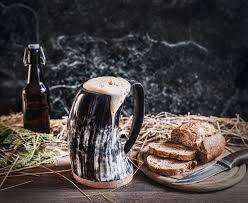

Go Back
Thunder Serpent Mead

Description
Thunder Serpent Mead is a mythical beverage that blends the divine essence
of a thunder god with the salty tang of the sea. This enchanting mead is
brewed with rich honey and a touch of sea serpent’s scale for an extra
layer of complexity. Infused with slices of lemon and literal
thunderbolts, this mead captures the essence of both celestial and oceanic
realms in a single, otherworldly drink.
Ingredients
- 1 gallon water
- 3 pounds honey
- 1 packet yeast (wine or mead yeast)
- 1 lemon (sliced)
- 1 thunderbolt
- Sea Serpent’s scale (for a hint of salt)
Steps
-
Boil water and dissolve honey in it. Let cool to room temperature.
-
Add yeast, lemon slices, thunderbolt, and a small piece of sea serpent’s
scale.
- Transfer to a fermentation vessel and let ferment for 2-3 weeks.
- Bottle and age for another 2 weeks before drinking.